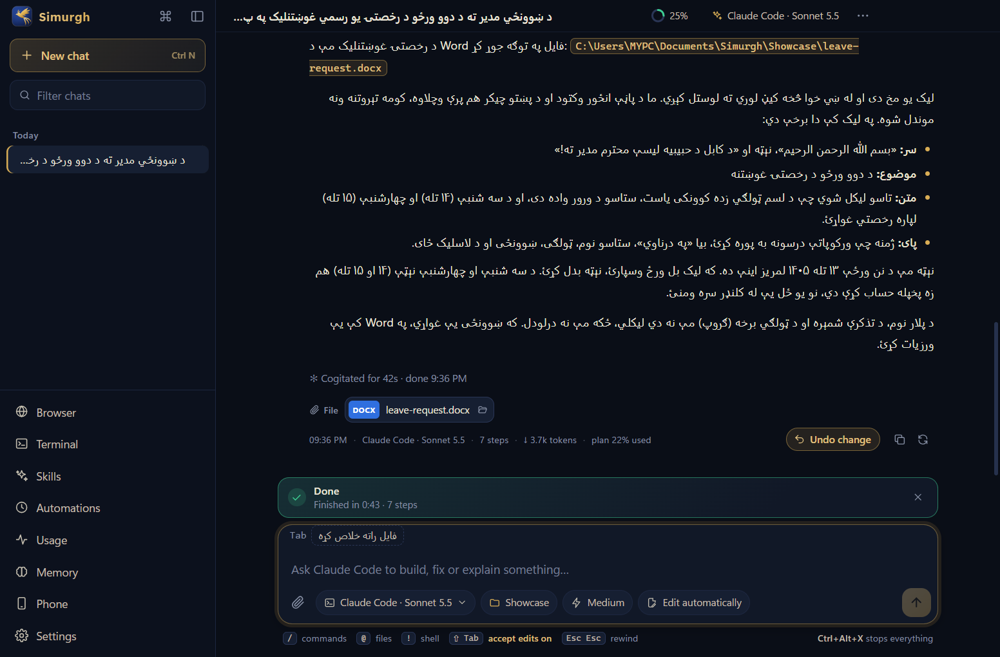
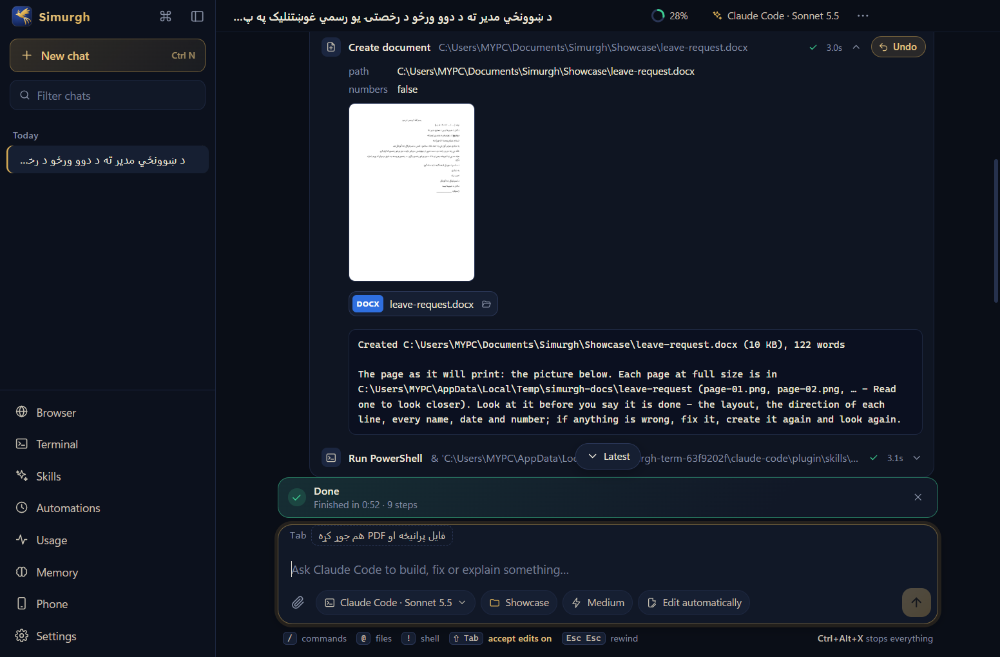

Simurgh
An assistant for Windows that doesn't just answer — it does the work on your PC. Letters, spreadsheets, files, forms, the web. In English, Pashto or Dari.
Download for Windows
What it does
Uses your computer. It sees the screen, clicks and types in any app, and reads the real buttons and fields through Windows instead of guessing from pixels.
Documents. Word, PDF, Excel and PowerPoint. Before it hands you a file it looks at every page, so you don't have to find its mistakes.
Claude Code. If you use Claude Code, it runs right inside Simurgh's window — with its commands, memory and sessions, plus Simurgh's skills.
170 skills. CVs, official forms, reports, slides, research, school work, cleaning up a slow PC, and more. You can switch any of them off.
Its own browser. It searches, reads pages and fills in forms — but it never submits or pays for anything without asking you.
From your phone. Send it tasks and files over Telegram, approve what it wants to do, or stop it while you're away.
Automations. Jobs that run once, every day, every week or every few minutes.
Careful. It asks before anything that can't be undone, keeps an Undo for file changes and stops the moment you press Ctrl+Alt+X.
Pashto and Dari, done properly
Most AI tools treat our languages as an afterthought. Simurgh doesn't:
- Word files and slides that read from the right — paragraphs, tables and lists, with fonts that join the letters properly.
- Official letters and petitions in the usual Afghan layout, with solar-hijri dates like ۱۳ تله ۱۴۰۵.
- A Pashto spelling check — the five kinds of ی, the letters ټ ډ ړ ږ ښ ګ ڼ, and Dari words that slip into Pashto.

Why I made Simurgh
Hi, I'm Bilal Ahmadzai, from Afghanistan.
I wanted a computer assistant that does more than answer questions — one that actually does the work: writes the letter, fixes the spreadsheet, finds the file, fills in the form. And I wanted it to understand my languages. Most AI tools don't really care about Pashto and Dari: the letters come out broken, tables run the wrong way, and the dates are in a calendar nobody here uses.
So I built Simurgh. I named it after the Simurgh, the wise bird of our old stories who shows lost people the way.
It's free. If something doesn't work, or you have an idea, tell me on GitHub.
— Bilal
Installing it
- Download
Simurgh-Setup.exe(about 115 MB). - Open it. It installs for your Windows account — no administrator needed — and puts a shortcut on your desktop.
- Pick an AI to work with: sign in with ChatGPT or OpenRouter, set up Claude Code, add an API key (Anthropic, OpenAI, Gemini), or run a free model on your own PC with Ollama.
Windows may say “Windows protected your PC”, because Simurgh is new and its installer isn't signed yet. Click More info, then Run anyway. After that it keeps itself up to date.
Questions
Is it really free?
Yes. The AI service you connect may cost something — a ChatGPT or Claude plan you already have, OpenRouter credits or API usage. With Ollama it runs free on your own PC.
Where do my files and chats go?
They stay on your PC: chats and settings in %APPDATA%\Simurgh, the files it makes in Documents\Simurgh. What you ask goes only to the AI service you chose. Sign-ins and keys are encrypted by Windows. There's no account, no ads and no tracking.
Is it safe to let an AI use my computer?
It shows every step and asks before anything important or permanent, and before closing any window you had open. Press Ctrl+Alt+X — or throw the mouse into the top-left corner — and it stops.
Mac or Linux?
Not yet — Windows 10 and 11 only.
How do I remove it?
Windows Settings → Apps → Installed apps → Simurgh → Uninstall. Your chats and settings stay in %APPDATA%\Simurgh until you delete that folder.